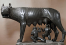
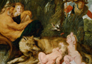

The Foundation of Rome—Romulus and Remus
Aeneas does not himself actually found Rome, an event which traditionally was said to have occurred several generations later. Some years after the death of his father Aeneas, Ascanius founds the city of Alba Longa in Latium. The actual founders of Rome, Romulus and Remus, are descended from the royal line of Alba Longa, some four centuries after the death of Aeneas. Rome is traditionally said to be founded in 753 B.C.E.
Romulus and Remus are twin brothers, sons of Mars and Rhea Silvia (Ilia). As children they were exposed by their great-uncle Amulius, who took the throne from their grandfather Numitor. Romulus and Remus were supposed to be thrown in the river Tiber, but the servants pitied them and left them next to the river. They were saved by a wolf, who suckled them and then found by Faustulus, a shepherd of Amulius, who raised them. (see images 1-2) When the twins grow up they are brought before Numitor. They help him to regain the throne of Alba Longa and then go to found their own city.
{kind=link}
{kind=link}
Romulus and Remus then go to found their city on the banks of the Tiber, the spot where they were rescued by the wolf. But they quarrelled as to who should give his name to the city. This was decided by the omens of birds. They stood on the Aventine Hill (or Romulus sometimes on the Palatine Hill) and watched the birds. Romulus received the favourable omens. In one version of this myth, Remus argued with him and was killed in the fight. In another version, Remus jumps over the walls of the city which Romulus is building on the Palatine. Romulus interprets this as a hostile act and kills his brother.